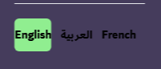

the white space
the space on the top is not equal to the space on the bottom
the color and the contrast
that green does not look great with the purpule and the contrast between the black and purpule is bad
the alignment
those arrows does not align correctly